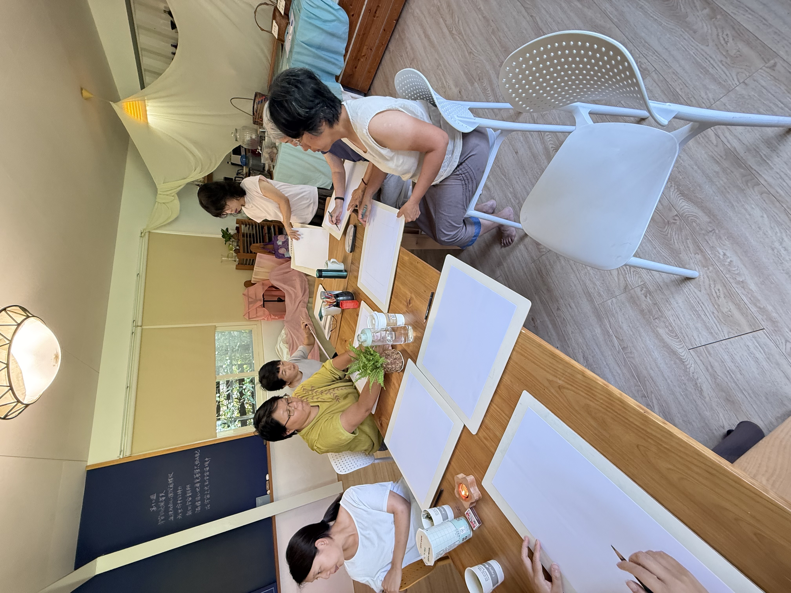
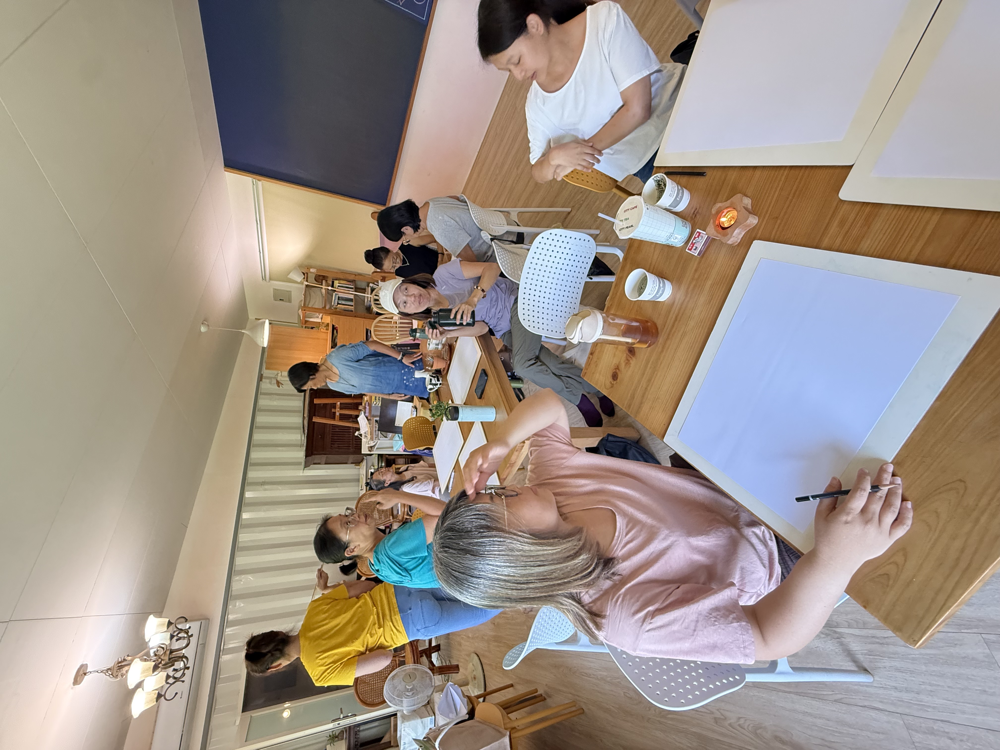
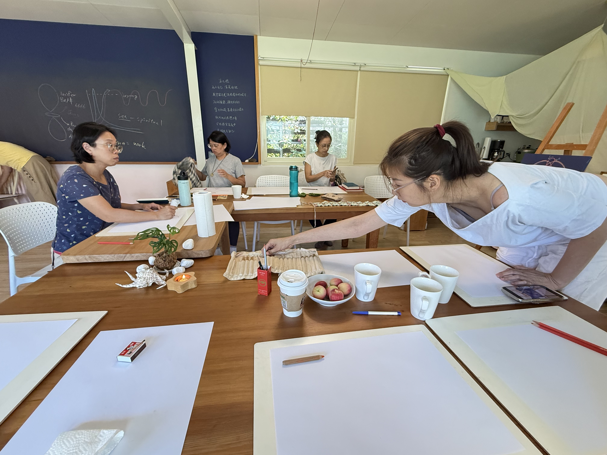

走過十年，迎向第二回合
第一次的治療教育讀書會是在10年前。10年後，我們終於將 " 治療教育 " 這本書讀完了！
這10年期間參加讀書會的朋友們來來去去，緣起緣落，似乎大家都是在最需要聽聞或探討文本裡某段發人深省的深奧意義時，來到了我們這裡，也在人生的階段裡，尋到一些答案，而繼續前往下一個階段去。
不確定第二回合是否還是另一個10年，但相信不論時間的長短，每一個人都可以在這本書裡面得到他們當下最需要的訊息。
史代納博士的這十二個演講是在他生命非常後期，在短短的半個月之內完成的，相信他在離開人世之前，很努力的留下了珍貴的訊息，給教育者、給家長。特別是給和特殊需求的朋友工作的大人們，但別忘了，我們每個人都是特殊需求者，只是需求的面向和程度都不一樣罷了！
讓我們一起來透過治療教育的視角，更深入探討人智學的奧意！
等你一起來⋯
讀書會資訊
⏰ 時間與梯次
開課時間：四季固定開課
讀書會時間：每星期三早上 09:00 - 11:00
📍 地點
五芒星星親子共學園
宜蘭縣三星鄉安農九路 560 號
( 位於美麗的安農溪畔 )
💰 費用說明
- 場地費：每次 200 元（請每次自行投入籃子內）
- 講師費：隨喜（請每次自行投入籃子內）
- 若有藝術活動，材料費另計
讀書會帶領人 ( Leaders )
由專業豐富的師資陪伴大家一同溫習、共讀與探討
陳曉霓 老師
「熱愛和孩子一起工作，陪伴家長在教養的過程不孤單。」
現任
- Extra Lesson 支持教育輔正教育老師
- 親職教養諮詢
- 治療教育讀書會帶領人
- 社團法人台灣華德福親子共學協會理事長
專業背景與經歷
- 宜蘭慈心華德福幼兒園六年主帶經驗
- 空間動力 Spatial Dynamics 二階培訓
- 台灣四年制治療教育與社會治療學程認證
- 美國 Golden Valley 華德福戶外幼兒園一年實習
- 美國 Steiner College Remedial Program 輔正教育認證
- 美國 Steiner College 華德福幼教師訓認證
- 人智學教育基金會華德福教育師訓
張荷月 藝術老師
資深藝術工作者，創作跨域悠遊於繪畫、設計、空間設計規劃、佈置，親子藝術教育、藝術陪伴療育課程與體驗工作坊。
現任
- 社團法人台灣華德福親子共學協會常務理事
- 五芒星星親子共學藝術老師
- 若為自由有限公司藝術總監
- 帶領虹光漆工作坊與施作（作品見於各華德福學校）
專業背景與經歷
- 人智學教育基金會華德福教育師訓三年課程
- IPMT 五年學程
- 台灣四年制治療教育與社會治療學程結業
- Iris Sullivan 老師藝術鍛鍊三年課程
- 台灣人智學藝術治療課程修業中
形線畫與藝術實作
在活動開始前與引導中，透過形線畫將讀書會當日的深刻省思與心靈圖像化為筆下線條

專注沉浸的形線畫時光'">沉浸內在的繪畫時光
在安靜舒適的空間裡，每個人都專注於自己的線條與心靈對話。

荷月老師的溫暖引導'">荷月老師的溫暖引導
透過藝術陪伴，將文本中深奧的人智學意涵轉化為流動的圖像。

準備開始的專注氛圍'">靜心準備的共學氛圍
動筆前的凝聚與沉澱，在安農溪畔共度充實而安定的早晨。
加入我們的讀書會旅程
不論您是教育工作者、家長，或是對人智學與治療教育有興趣的夥伴，歡迎點擊下方按鈕私訊官方帳號洽詢與加入！